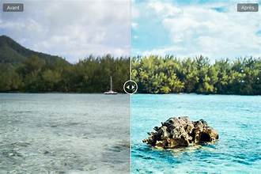

Le traitement d’image permet d’améliorer une photo. On peut modifier la luminosité, les couleurs et recadrer l’image.

- Luminosité
- Contraste
- Couleurs
- Ouvrir la photo
- Modifier
- Enregistrer
| Action | Effet |
|---|---|
| Recadrage | Couper une partie |
| Luminosité | Éclaircir |
Source : Cours SNT